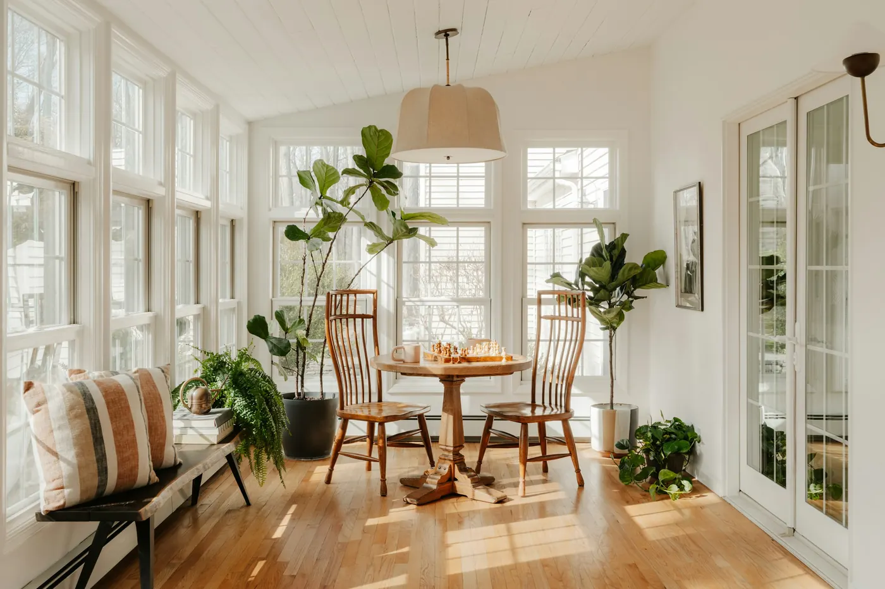
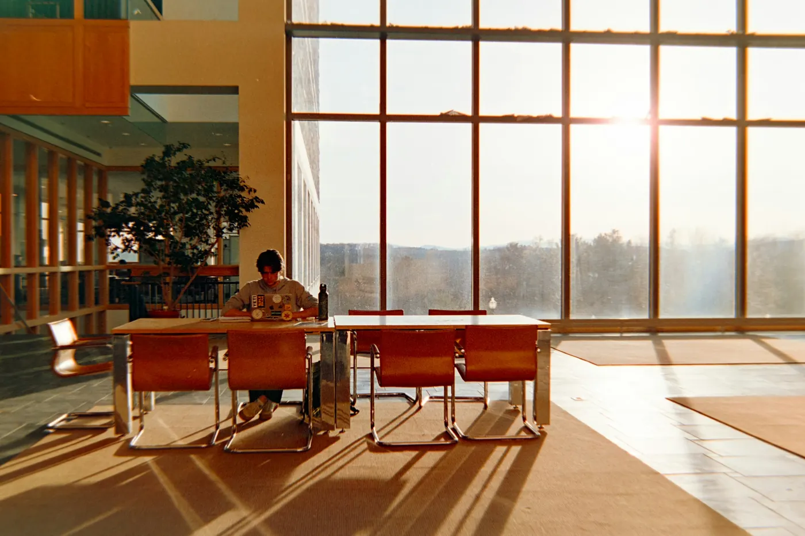

Jusqu'au 30e jour
L'Assurance maladie prend en charge 80 % des frais d'hospitalisation, hors forfait journalier. Les 20 % restants sont couverts par votre mutuelle ou la complémentaire santé solidaire.

Admission, frais, vie quotidienne, sortie : tout ce qu'il faut savoir pour préparer une hospitalisation à Bourgoin-Jallieu ou à Vienne, et la vivre le plus sereinement possible.
Admission
Le bureau des entrées vous accueille du lundi au vendredi, de 8 h 30 à 16 h 30. En dehors de ces horaires, l'admission se fait directement dans l'unité de soins, 24 h/24.
Identitovigilance. Votre identité est vérifiée à l'admission, à l'hôpital de jour et au CMP, puis régulièrement pendant les soins. C'est une mesure de sécurité : elle garantit que chaque soin est bien le vôtre.

Frais d'hospitalisation
Les frais comprennent le tarif journalier d'hospitalisation et le forfait journalier hospitalier, fixé par arrêté ministériel.
L'Assurance maladie prend en charge 80 % des frais d'hospitalisation, hors forfait journalier. Les 20 % restants sont couverts par votre mutuelle ou la complémentaire santé solidaire.
Les frais d'hospitalisation sont pris en charge à 100 % pour un séjour continu.
Une prise en charge à 100 % dès le premier jour, si vous êtes hospitalisé pour l'affection reconnue.
Les frais sont à votre charge, mais les assistants sociaux vous aident à faire valoir vos droits et à trouver des solutions.
Modes de soins
Les soins libres, avec votre accord, sont la norme. Votre consentement est toujours recherché.
Les soins sans consentement sont une exception strictement encadrée par le Code de la santé publique : contrôle du juge, certificats médicaux réguliers, droits d'information et de recours.
Plaquette sur les soins sans consentementSur demande d'un proche, en procédure classique, en procédure d'urgence (SDTU) ou en cas de péril imminent (SPPI), lorsque les troubles rendent le consentement impossible et imposent des soins immédiats.
Sur décision du préfet ou, en urgence, du maire, ou sur décision judiciaire, lorsque les troubles compromettent la sûreté des personnes ou portent gravement atteinte à l'ordre public.
Contactez Juliette Verna Tessier : jtessier@fondation-boissel.fr. Vous pouvez aussi saisir la Commission départementale des soins psychiatriques. En savoir plus.
Objets de valeur
L'établissement n'est pas responsable des objets de valeur conservés pendant le séjour. Nous vous recommandons de déposer argent, bijoux et objets précieux au bureau des entrées.
Les sommes d'argent, valeurs et moyens de paiement sont confiés au régisseur des services économiques. Les autres objets (clés, téléphone…) peuvent être remis au cadre de santé. Les modalités de retrait vous sont indiquées à la sortie.
Vie quotidienne
Repas en salle à manger, salle de télévision dans chaque unité, bibliothèque, cafétéria, terrasses et jardins : la vie à l'hôpital garde ses repères.
Servis en salle à manger, sauf prescription médicale. Un comité de restauration et un comité de nutrition veillent à leur qualité ; régimes spécifiques sur prescription.
Famille et amis sont les bienvenus. Les horaires varient selon les unités et vous sont communiqués. Le médecin peut les restreindre dans votre intérêt, et vous pouvez refuser une visite.
Courrier distribué chaque jour dans les unités ; envoi depuis l'accueil, levée à 14 h 30 sauf le samedi. L'usage du téléphone est organisé dans chaque unité.
Le linge est en général entretenu par la famille ; une buanderie est disponible pour une somme modique. Prévoyez votre nécessaire de toilette.
Un quotidien régional est distribué dans les unités, une bibliothèque est à votre disposition, et chaque unité dispose d'une salle de télévision.
Vos croyances sont respectées : un représentant du culte de votre choix peut vous rendre visite. L'établissement peut exercer des mesures de protection juridique des majeurs.
Règles de vie
Elles protègent chacun, patients comme soignants.
Votre sortie
Elle est fixée avec le médecin de l'unité, qui vous indique la suite du traitement, souvent au CMP le plus proche de chez vous.
Des visites à domicile peuvent être prescrites, avec votre accord. Votre médecin traitant reçoit les informations médicales utiles.
Passez au bureau des entrées pour mettre à jour votre dossier : un bulletin de situation vous est remis pour vos organismes.
Vous choisissez votre mode de transport. L'équipe n'intervient qu'à votre demande, et les assistants sociaux peuvent vous aider.
En soins libres, une sortie contre avis médical reste possible : une décharge vous est alors demandée.
Une pièce d'identité ou le livret de famille, votre carte Vitale ou son attestation, votre carte de mutuelle ou de complémentaire santé solidaire et, pour les ressortissants étrangers, un titre de séjour et le formulaire européen de prise en charge.
Les frais comprennent le tarif journalier et le forfait journalier hospitalier fixé par arrêté ministériel. Pour les assurés sociaux, l'Assurance maladie prend en charge 80 % des frais jusqu'au 30e jour consécutif, puis 100 % à partir du 31e jour ; une affection de longue durée reconnue ouvre droit à une prise en charge à 100 % dès le premier jour pour cette affection. Les assistants sociaux accompagnent les personnes qui ne peuvent pas régler leurs frais.
Les visites sont possibles ; leurs horaires varient selon les unités et vous sont communiqués à l'arrivée. Dans l'intérêt du patient, le médecin peut les restreindre temporairement, et le patient peut refuser une visite.
En soins libres, oui, après information sur les risques : une sortie contre avis médical donne lieu à la signature d'une décharge. La date de sortie est normalement fixée avec le médecin de l'unité, qui organise la suite des soins, souvent au CMP proche de chez vous. Les soins sans consentement obéissent à des règles spécifiques, sous le contrôle du juge.
Formulaire de contact
Le secrétariat concerné vous répond dans les meilleurs délais. Pour une demande urgente, appelez directement le service.
Ce formulaire n'est pas adapté aux situations d'urgence. Si une vie est en danger : 15. Pensées suicidaires : 3114, 24 h/24.
Merci. Le secrétariat concerné vous répond dans les meilleurs délais.